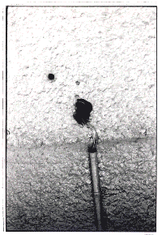
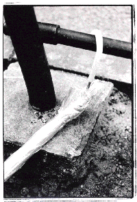
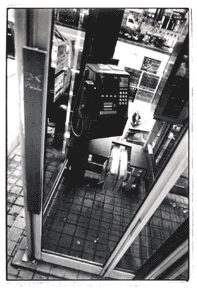

|
ゴミを愛する人々
新宿で飲んでいて、またしても最終を逃した。 私は神奈川県の湯河原温泉という田舎に住んでいる。温泉は近いが東京は遠い、仕事で東京に出て飲むと必ず飲みすぎて最終を逃してしまう。そういう時は朝までカラオケなのだが、あいにくとその日は一人だった。一人でも飲みに行くほど酒好きだと言うことだ。 新宿のゲームセンターで暇つぶししていたら、一人のホステスと知り合った。お互い連れがいなかったので、二人でゲーム対戦したのだ。それから意気投合して私の行きつけのバーに行った。午前三時を過ぎた頃、彼女が私に言った。「あたしの部屋に泊まれば? 」 彼女の部屋は東中野だと言う。それじゃあ、ってことになってタクシーで彼女の部屋へ行くことになった。さすがに私も疲れてきて横になりたかった。もう一〇時間近く飲んでいるもの。「散らかってるけど、ごめんね?」 直ちゃんは、そう言って二階建てのアパートの階段をカツカツ上っていく、私も後につづいた。直ちゃんは「いかにも新宿のホステスさん」って感じの子(ドドメ色の口紅と爪、茶髪のレザーカット、黒のレースのタンクトップ)で、丸顔色白、もちろん声は煙草の吸いすぎでハスキーボイス、年は二四歳ってことだった。 部屋には誰もいないのに電気がついていた。ドアを開けると半畳ほどの玄関にうず高く積まれているのはコンビニの袋に入った無数のゴミだった。そのコンビニの紙袋のゴミは玄関から部屋に続く狭い通路をびっしりと埋め尽くし、さらに奥の部屋のいたるところに転がっていた。直ちゃんは「まったくもう！」とか言いながら、そのゴミ袋を足で蹴散らして、サンダルを脱ぎ捨てると「どうぞ、どうぞ」と私に手招きする。入っていって驚いた。だってその部屋はほとんどゴミ捨て場と化していたんだよ。ゴミと洋服、それでしかないんだ。大量のゴミと洋服！ 六畳一間のそのアパートのベットの上には無造作に派手な洋服が積み上げられ、ベッドの下はゴミだらけ、テーブルの上は食い残したコンビニの食べ物の残骸で埋っていた。 「なんか忙しくて、なかなかゴミが捨てられないのよね？」 そう言いながら直ちゃんは私のためにゴミを寄せてスペースを作ってくれた。正直言って、その部屋はちょっと臭かった。 「よくぞここまで、ゴミをため込んだわよねえ」 私はゴミの中に体を小さくして座り、部屋を見回した。この部屋には食器とか料理器具とか、そういう生活に必要なものはほとんどなかった。あるのは洋服とゴミなのだ。 以前に、ニュース番組で「ゴミを拾い集める老婆」を特集したことがあった。その老婆は自分の住んでいる一軒家の庭先に大量のゴミを放置していた。そのゴミを、なんと老婆はゴミ捨て場から拾い集めてきていたのだ。ゴミの量は庭を完全に埋めつくし、ついには老婆の自宅の扉はゴミの山によって開かなくなった。近所からは「臭くてたまらない」という苦情が殺到。区の職員が捨てるように説得に行っても老婆は決して話し合いに応じない。庭にあるゴミは財産と見なされるので行政が勝手に処分することはできないのだ。 いったいなぜ？ なんの目的でゴミを拾い集めて自宅に放置するのか？ 誰が聞いても老婆は答えない。その理由を彼女自身もわかっていないみたいだった。ゴミは腐敗し悪臭を放ちハエが発生し、衛生的にもかなり最悪な状態になりつつあった。みんながほとほと困り果てていた時に、一人の救世主が現われた。 それは区の女性職員。一人の若い女性職員が、毎日毎日老婆の家に通い、ゴミのことなど話題にせずにただ毎日話し相手になったのだ。最初はかたくなだった老婆も、毎日やって来ては世間話をしていく女性にだんだん心を許すようになる。そして、約三ヵ月をかけて、ついに女性はゴミの撤去の承諾を得るのだった。 トラックが何往復もして運ばねばならないほどのゴミが庭に堆積していた。撤去されるゴミを、老婆は切なくて見ていることができないようだった。「もう、これからは、ゴミをためることはないですよね？」 テレビのレポーターが質問すると、彼女はこう答えた。 「わからない。また拾いたくなるかもしれない」 拾いたくなる……。確かに老婆はそう答えたのだ。ゴミを拾いたくなるって。 「ねえ、どうしてこんなにゴミをためちゃうの？ 汚くて嫌だなあって思わない？」 「うーん、思うんだけど、なんかめんどくさいんだよね。部屋に帰って来るとネジが切れちゃったみたいになって何もしたくないの。すごくダルいっていう感じ。それになんか散らかっている方が落ち着くし」 「カレシとか、いないの？」 「前いたけど、別れた。いまはいない」 「カレシがいたときはどうしてたの？」 「向こうの部屋でいっしょに住んでた。ここにはたまにしか帰って来なかったから。それよりさあ、ランディさん明日帰るの？ もう一晩泊まっていけばいいのに。明日はあたしの店に飲みにおいでよ」 洋服とゴミに埋もれた直ちゃんは、レディス・コミックを読んでいた。テレビもあまり見ないんだそうだ。夜の勤めだから連ドラも見れないし。直ちゃんは、無気力なわけでも、元気がないわけでもない。どちらかと言えばぎゃはははと明るいタイプの女の子に見える。でも、彼女が背負っているこの寂しさは何なんだろう？ 寂しさというよりも人恋しさだろうか。見知らぬ私を泊めて、さらに明日も引き留めようとする猛烈な人恋しさ。 なにかで埋めている。いつも埋めている。誰かといっしょにいれないとき、自分と向き合わないために、心を埋めている。常に埋めている。そんな風に見える。埋めること、それが直ちゃんの隠れたコンセプトなのかもしれない。なにか底無し穴のような果てしない虚無が彼女にあるんだろうか？ すうすう寝始めた直ちゃんは、化粧も落とさない。彼女の化粧はまるで死顔のようだ。自分を死顔にメイクしてるみたいに見える。この若さで、すでに彼女は死を内包してるのだろうか。そういう世代なのだろうか。直ちゃんは、無欲ですごく純粋、私よりずっとピュアに見えた。ゴミを溜めているのに、このゴミは彼女の無欲の現われのように思えた。ぎりぎりの生産性で生きている。彼女はなにもしない。 もう消費ですら彼女にとっては快楽じゃないのだ。 |

|
通り魔事件と新聞専売所
九月八日は蒸す日だった。人間を入れた土鍋にスモッグで蓋をして火にかけたように暑かった。東京の暑さは町に蒸されている暑さだ。頭がホワイトアウトしそうになる。午前一〇時四〇分頃、池袋の路上で二三歳の男性が通行人を襲った。男は包丁と金槌を持って、通行人を無差別に襲い、被害にあった方のうちお二人が亡くなった。 私はこのニュースを新幹線の車内の電光ニュースで知った。「男は元新聞販売店勤務……」。その文字を読んだ時に、なんとなくぼんやりとこの二三歳の男のイメージが浮かんだ。というのも、私は十八歳から十九歳までに一年間、都内の新聞専売所に住み込みで働いていたからだ。 かれこれ二〇年が経つけれど内実は昔とそれほど変わってはいないんだろう。専売所という世界は独特な世界で、あの場所で経験した事はなかなか忘れ難い。 この話をすると必ず「田口さんって苦労されたんですね、女性なのに」といたく同情される。どうも「新聞配達」という職業は「貧乏人かはぐれ者」が就く苛酷な職業だと思われているらしい。確かに、私は高校を卒業して大学に進学するために奨学金を貰って専売所に勤めた。親は私が地元を離れることを反対して、学費など出さないと言う。鼻から親なんかの世話になる気はなかった。 高校の担任に「親の世話にならずに大学に行く方法がありますか？」と聞いたら、担任が「新聞奨学生ってのがある」と教えてくれたのだ。「私、自転車に新聞を積んで運べるかなあ」と言ったら「大丈夫だ。女の子は飯の賄いをやるんだ」と言う。 ふーん、それは面白そうだなと思った。というのも私は昔から他人と職業観というのがズレていて、一番なりたい職業はホステスで、次が作家で、次がお手伝いさんだった。お手伝いさん、旅館の仲居、役者、精神科医、庭師、芸者、そういう職業が私の憧れの職業であり、できれば死ぬまでにいろんな職業を転々としたいと考えていた。 高校の時に初めてやったアルバイトは笠間稲荷でダルマを売ることだった。以来、宴会場のお座敷係、漢方薬屋の助手、神社の巫女と、変なアルバイトばかりしていたけれど、本当に面白かった。働くって楽しいなあと思っていた。 なので、新聞専売所で新聞少年の飯炊き女をやる、というのはなかなか私にとっては魅力的な職業であり、人生の門出にふさわしいと考えたのだ。 私が配属された専売所は、大学生の男の子が八人、専従の社員が三人、それから私と、所長と奥さん、という構成だった。男の子たちは、なんと八人のうち五人までが浪人生だった。しかもそのうちの三人はすでに三浪以上で、この人たちは本当に大学に行く気はあるのから？ と思った。 残り二人は専門学校に通っていた。出身は沖縄から北海道まで、てんでバラバラ。一番年上の子で二二歳だった。彼は青森出身で四浪目。来年ダメだったら田舎に帰ると言っていた。 新聞配達の朝は早く、朝三時前には新聞が届く。すると、新聞配達はチラシの折り込みというのを手作業でやる。最近は機械がやってくれるが、この頃は手作業で、何十枚というチラシを手で新聞に折り込んでいくのだ。手間がかかる。 その新聞を自転車に積み上げて配達に行く。だいたい朝六時半くらいまでに配達を終える。早い人もいれば遅く出る人もいる。私は四時半くらいから朝御飯の支度にとりかかる。毎日十四、五人分の食事を作っていたので、いまだに炊き出しは得意だ。 全員の食事が済んだら後片づけをして、そしてその日の夕飯の食材をメモしておく。するとそれを奥さんが買っておいてくれる。夕方は六時くらいまでに食事を用意する。片づけが終わるのは八時前くらいになる。 毎日毎日来る日も来る日も飯のことを考えていた。今日の晩飯は何にしようか。明日の朝飯は何にしようか……。一ヶ月の食費は決められているので、やりくりが必要になる。家計簿をつけているようなものだ。主婦になった今はそんなもんつけた事もないのに。 全員の朝飯が済んで、後片づけも終り、さて学校に行こうかと思っている頃に電話がなる。これが「不着」の電話である。「新聞が届いてないんですけど」と怒鳴られる。それからが大変である。新聞少年のアパートは販売所の近所に分散しているので、そこまで起こしに行く。当時、誰の部屋にも電話なんか引かれていなかった。 新聞少年は配達が終わると寝てしまう。なにしろみんな浪人だからルーズである。その寝ている新聞少年を「不着ですよ〜！」とたたき起こさねばならない。なかなか起きない。やっと起きて来ると機嫌が悪い。 再び専売所に戻る。するとまた次の電話がかかっている。メモが置いてある。奥さんだ。「小松君に不着の連絡、伝えて下さい」とのこと。小松君の部屋まで走る。叩き起こす。これを繰り返していると、私はいつまでたっても学校に行けないのであった。 この専売所の奥さんは美人だけれど神経質な女性だった。お見合いで所長と結婚してまだ二年目といいう。あまり新聞専売所が好きでないらしく、ほとんど顔を出さず部屋の奥に引っ込んでいる。痩せていていつも顔色が悪く、年齢は三六歳くらいなのだけれど子供さんはいなかった。 専従の社員は専売所の二階に住んでいた。一人は吉田さんという癲癇持ちの男性で、年齢不詳だった。この人はときどき発作を起こす。私はここで初めて癲癇の発作というのを見て心底怖かった。いきなりドターンとひっくり返るや、口から泡を吹き出し、今にも死にそうである。 すると御主人が「大丈夫だ、ぞうりを頭にのせてやれ」と言う。本当かいなと思って、スリッパを頭にのせて見守っていたら、そのうちケロリと元気になった。「配達中に倒れたら危険ですよねえ」と私が言うと、御主人は「だから内緒だ」と言った。新聞社の専売所担当者には内緒にしろということらしい。 この吉田さんは、私と二人になると覚せい剤の話ばかりする。「お前よ、覚せい剤ってのは本当に気持ちいいんだよ。なんていうかなあ、頭がよ、ぱーーっと青空になったみたいなんだよ。すかあっとしてよお、晴れ晴れすんだよ。俺はよ、いつも頭のなかがもやもやしてるんだけどよ、あれやったときは本当によお、生きてるなあってわかるんだよ」 吉田さんは嘘つきだったので、本当にやってたのかどうかは知らない。でもうっとりするような目で語っていた。この人の頭のモヤってどんな感じなんだろうって、思った。虚弱で顔が吹き出物だらけでいつも不潔だった。でも優しい人だった。「俺はいつ死ぬかわかんねえ」が口癖だった。彼はここに十五年勤めていた。 もう一人は長田さんという人で、この人は遊び人だった。ブラブラブラブラゴロゴロゴロゴロしている人だった。一見、ちょっとした優男である。寝ころんで本ばかり読んでいる。しゃべると博学だ。なんでも九州の某市会議員の息子で家はすごく金持ちなんだそうだ。 なぜドロップアウトして住み込みで新聞配達をしているのかわからないが、かれこれ十年、ここに勤めているという。マイペースでシニカル。達観しているのか屈折しきっているのかわからない。一度、勤め始めたばかりの頃に花見に誘ってくれた。缶ジュースをおごってもらい「俺のみそ汁は薄味にしろ」と言われた。 そして増田君。増田君は元不良で、高校を中退して以来新聞配達をやっている。私と同じ年のくせに頭にパンチパーマをかけて金のネックレスをしていた。喧嘩っ早くて怒ると暴れる。遅刻の常習犯。一度、路上でいきなり抱きついてキスされた事がある。手も早いらしい。が、男の子がたくさんいたけど私に手を出して来たのは増田君だけだった。あとはみんなすごく真面目な子たちだった。 専売所というのは慢性的に人手不足で、いつも求人していた。だけれど、新聞少年以外の配達員は、入れ替わりが激しい。だいたい三ヶ月から半年で辞めていく。入れ替わり立ち替わりいろんな人がやって来た。 私は御飯の支度をしているので、そういう人たちとも必ず顔を合わせる。人としゃべりたくない人は時間をずらして食事をしてさっといなくなる。年の近い新聞奨学生のグループはみんな仲が良くて、よく飲みに行ったりしていた。 だけど、求人でやって来る人は年齢もさまざま、事情もさまざまで人つきあいを避けるような人も多い。 十七歳の少年が来た事があった。本来なら高校へ行っている年だけれど、いじめにあったとかで高校をやめて専売所に入って来た。彼の両親は特別な宗教を信仰していて肉類を一切食べない。彼はいつも一人で「グルテン」という大豆で作った肉というのを料理して食べていた。 一度食べさせて貰ったことがあるけど、なんだかくちゃくちゃしていて味気なかった。彼もその宗教を生まれた時から信仰しているのだという。生まれた時に子供が宗教を選ぶわけはなく、親に強制されたのだと思うが、もう彼の価値観は信仰でガチガチで、魂は悲鳴をあげていた。 ある朝、彼は新聞を積んで配達に出かけたが、何を思ったのかいきなり「うおおおおおおおお」と叫んで、新聞を空に放り投げてバラまいた。まだ明けやらぬ青いしじまの中で、彼のシルエットが狂ったように新聞をぶちまけていた。人がキレるという瞬間を初めて見た。生きるのは壮絶だなあと思った。 能勢さんという男性は、ずんぐりしたのっぽで髪が長く、まるでインディアンみたいな風貌だった。動作が鈍くて、不着が多く、ほとんど口をきかない。配達の順路がなかなか覚えられず、何日も主任に同行してもらっていた。順路を覚えた頃に忽然と消えてしまった。言葉をほとんど聞かなかった。こういう人は新聞少年からも嫌われる。 吉岡さんは、美大の万年学生だったが、ついに除籍になったという。絵をあきらめきれない。油絵を描きたい。だが絵を描いても食えない。新聞配達をしながら昼間は創作をしようと思って専売所に来たが、ひどいスランプに入っていて、全く描けない。マッシュルームカットで女の子のような顔をしていた。 「何もしないで一日が終わると、すごい自己嫌悪を感じるんです。でも、何も描く気になれない」 と、ある日彼が台所でコーヒーを飲みながらつぶやいた。私はなぜだかとっさに「吉岡さん、ここに居ちゃダメですよ、ここに居たら描けないですよ、創作するなら新聞配達はダメです」と言った。 なぜ自分がそんな事を言ったのかよくわからない。つい口から出た。でも、今はそれがよくわかる。当時十八歳の私ですら、この場所は創作には向かないと直感していたのだ。人間にとって、明け方三時から七時と夕方三時から七時は、非常に集中力の上がる時間帯なのだ。それを配達という仕事にとられたら、よほど強い精神力が無いかぎり別の事には集中できない。そう思う。 しかも、新聞配達員には「集金」という義務がある。これが新聞少年を苦しめていた。新聞料金を八〇％集金しないと給料が支払われない。だが、都会の住人は夜も居ないことが多くてなかなか集金が思うようにならないのだ。かといって夜中や早朝に行くと「非常識」と怒られる。 今はどうか知らないが、当時は「新聞勧誘員」という人がたくさんいた。専売所にもよくやって来た。彼らは新聞社の社員ではない。「専売所」ごとの契約である。だから、その専売所と契約さえすれば朝日だろうと読売だろうと、どこの新聞でも勧誘する。勧誘することが仕事の集団なのだ。 なぜか「ひまわり会」だとか「たんぽぽ会」というかわいらしい名前がついている。が、やってくるメンバーはちょっと強面のお兄さんばかりだった。ときどき専売所でお茶など飲んでいく。そういう時に出る話が怖い。 「俺が高校の頃はよ、よく女を樹に縛りつけてみんなでまわしたもんだけどよ」みたいなことをヘラヘラと茶飲み話に話すのである。「そんなひどいことなんでしたんですか？」と私が聞くと「なんでって、不良の世界はつきあいがすべてだからさ、先輩がやるって言ったらやらんわけにはいかんのよ、つきあい悪い奴は信用されない」「ふーん、そういうものなのか」「不良も苦労多いのよ」 十八歳だった私には人間がよくわからなかった。良い人と悪い人はどこで分けたらいいのだろうか。もし樹に縛られた女が自分だったとしたら、私はこの人を憎む。でも、今、目の前にいる男は日焼けした顔で麦茶を飲んでいる垂れ目の勧誘員だ。今、この瞬間、私はこの人を嫌いではない。では人間の本性とはどこにあるのか。それは今もよくわからない。 専売所に集まって来る人たちは、どこかほんの少しズレている人が多かった。だけれども私はそれが決して居心地悪くはなかった。人というのはいろんな側面をもっているのだと思った。 新聞専売所という場所は、住み込みで食事がついている。身ひとつで就職できる。仕事は肉体労働だが汚い仕事ではない。それに専売所の御主人は苦労人が多く、面倒見がよい。職場としては悪くないと思う。 だけれども、まだ深夜ともいえる午前二時半〜三時頃に新聞が届き、三時過ぎには折り込みを始め、四時〜四時半には配達に出る。六時〜七時に帰って来て朝飯を食べ、それから寝ると目が覚めるのは昼だ。そして、茫然としているともう夕刊の準備が始まる。 この生活サイクルの中で、新聞配達以外の事をする時間は案外ない。配達に慣れないと、ただ新聞を配達するために起き上がり、そして飯を食べ、寝るという生活が続く。特に最初のうちは配達順路が覚えられないために配達に時間がかかる。夜、うっかり飲みに行ったりすると朝が起きられない。 そして月末近くなると集金がある。新聞少年たちは、私も含めてある圧迫感の中に生きていたように思う。いつも時間の事を考えている。なんとなく朝起きる事を考えている。奇妙な緊張感、それが抜けない。 だから彼らは、新聞が来るのを待ちかまえるようにして折り込みを済ませ、素早く配達に行った。新聞に追われてしまうと、もう気分が負けてしまうからだ。そうなったら、プレッシャーで潰れる。真面目に予備校に通っている子ほど、朝が早かった。 入店して三ヶ月くらいで朝の遅刻が目立ちだし、ある日忽然と姿を消す人が多い。まさに通り魔事件の犯人のように。彼は足立区の専売所に勤めていたという。いたって真面目な勤務態度だったが、誰ともしゃべらなかったと所長さんが語っていた。 彼がどんな生活をしていたのかが、ぼんやりとだがわかる。あの専売所の独特の新聞のインクの匂い。埃っぽい乱雑さ。専売所近くの古いアパート。何もない部屋。配達から帰って寝て、目が覚めた時に残る疲労感、夕刊の配達の気の重さ。終わるとすぐ、また次の配達のことを考えている。その、妙な圧迫感。 犯人に同情はしない。ただ、東京に出てきて新聞配達を始め、その専売所を黙って辞めた彼の人間像が私の記憶とダブるのだ。若い子たちは専売所から出ていく事ばかり考えていた。そして、専業の従業員をちょっとだけ馬鹿にしていた。 こんな所で一生を終わるのは人間のクズやで、とある男の子は言い切った。 だけど、今思うと、新聞配達に専念している人が、一番心穏やかに好きなように生きていた。若いって苦しいのは、いつも現状に満足できないからだ。満足できない原因は自分にあるのに、環境にあるんだって思い込んでた。ここは最低だと思っていた。私もそうだった。そして勝手に挫折して、勝手に何かを恨んでばかりいた。どうしたいのかわからない、ただ恨みがつのる。 専売所の壁には、いくつもの拳で叩いた窪みがあった。 |

|
幼児虐待という病気
一九八五年、デンマークである事件が起こった。 母親が自分の子供の点滴のなかに花瓶の水を混入し、子供を病気にし続けていたという事件だ。花瓶の水はもちろん不潔だ。その不潔なものを子供の血液に流し込む。この奇妙な事件は、それまで社会からあまり認知されていなかったひとつの病気を世に知らせる結果となった。 この母親は精神病とされた。病名は『代理によるミュンヒハウゼン病』。聞きなれない病名である。この病気の特徴は、母親が子供を病気だと言い張るところにある。母親は子供が原因不明の難病であると言い、子供を連れてさまざまな病院を渡り歩く。少なくとも五〇人から一〇〇人の医師の診察を受けるという。子供は病院でさまざまな検査を受ける。レントゲン撮影、血液検査、胃カメラ……。それらの検査は幼児にとってひどく苦痛なものだ。しかし、子供は病気ではないので、病気の原因はもちろんわからない。 「お子さんは健康そのものです」 と医師に言われると、母親はそれを不服に思って別の病院に行く。そしてまた一から検査を始めるのである。 子供は母親によって無理やり病気だとされる。そして何年間にも渡って病院をさまよい歩き、繰り返し繰り返し血を抜かれ、バリウムを飲み、放射線を当てられる。この検査がすでに幼児虐待とも言える。繰り返される検査のために学校に通えなくなり、子供たちは社会不適応を起こす。自分が健康なのか病気なのかわからなくなり、精神は荒廃する。 なかには子供に暴力を加えて無理やり病気にする母親もいる。その暴力は多岐に渡る。点滴に花瓶の水を入れるのも、そのひとつの方法だ。窒息させる場合もある。傷口を黴菌のついた鈍器でえぐりわざと化膿させる場合もある。危険な薬品を服用させる場合もある。わざと鼓膜を破る場合もある。ありとあらゆる方法で、とにかく子供を病気にさせて病院に連れていくのだ。 母親が自分の子供を故意に病気にするわけがない。誰でもそう思いたい。そして医師は多くの場合、母親の言い分を信じる。だからこの病気の発見は遅れた。誰もがこんな事実を信じたくなかったからだ。 この症例を始めて論文にして発表したイギリスの医師ロイ・メドーは、発表当初、世間から非難を浴びた。しかし、これはまぎれもない事実だったのだ。 この病気の母親が望んでいることは、ただ一つである。病院関係者と親密になること。 まさか？ と思う。そんなことのために？ でも、そうなのだ。この病気の母親たちは、病院の先生、医療スタッフと会うためだけに子供を虐待する。彼女たちの目的は「難病の子供を抱えた母親」として注目され同情されることなのだ。そのために子供を病気だと言い張り、そして時には自分の手を下して無理やり病気にする。自分の存在を認めさせるために、子供を利用することに何の罪悪感もない。子供たちは、母親から虐待を受けた事実を隠すように強要される。万が一母親を告発しても、誰も子供の言葉を信じない。 この病気の母親のいる家族には、五〇％の確率で不審な死を遂げた兄弟がいた。つまり、母親の病気が発覚した時はすでに、子供一人が殺されている場合が多いのである。母親は、一人が死ぬと、次の子供をターゲットにする。そして何度でも同じことを繰り返し続ける。彼女たちにとっては、医師の注目を引くこと、それだけが目的である。手段に興味はない。日本でも最近になって症例が確認されるようになっている。 「不思議な事件やねえ」 三歳になる娘のノンちゃんを公園で遊ばせながら、友人のヨリコと私は木陰でアイスクリームを食べていた。 「そうでしょ、気が知れないでしょ、なんでわざわざ子供を病気にして病院に通わなくちゃならないんだろうね」 ヨリコはアイスクリームの匙を加えたまま、なにやら考え込んでいる。 「あたしは、なんとなくわからんでもないような気がしないでもない」 「そうなの？ なんで、教えてよ」 九月も終りだというのに残暑が厳しい。公園には同じように子供を遊ばせているお母さんたちが木陰に茫然と立っている。 「お医者ってさ、妙に優しいと思わへん？ あんた独身の頃にさ、具合が悪くなってお医者に行って、すごく優しくされてなんとなくぽわんとなったことあらへん？」 ぽわんとなったことがないか？ と言われて真っ先に思い出したのは、昔つきあった歯医者の男の子の事だった。その子はお医者さん独特のやわらかい諭すような口調でゆっくりと話すのだ。その話し方にすっかりまいってしまって、のぼせ上がっていたことがあった。 「言われてみると確かに、お医者さんって独特の患者を安心させる口調をするよね。なんていうか、ちょっと親密で、口説かれているみたいな感じっていうか」 「そやろ、お医者ってさあ、相手の気持ちをリラックスさせるのが商売やから、いかにもあんたさんの事を一生懸命思ってますよ、ってしゃべりかけてくれるやんか。何度か通っているうちに、ああ、センセって素敵！ ちゅう気分になることあるやろ？ うち、その病気はそれやと思うわ」 なんという大胆かつ説得力のある分析だろうと、私は感嘆して深く頷いた。 「確かにわかるっ。気が弱くなってる時にお医者に行くと、先生が妙に素敵に見えるもんねえ。大丈夫安心なさい、とか、また来週いらっしゃい、とか、よくがんばりましたね、とか言われると、なんかこうクラってきちゃうとこあるもんねえ、そうか〜！」 ノンちゃんは時々お母さんの方を見ながらお砂場で遊んでいる。お砂場には四人ほど子供たちがいて、それぞれの子供には背後霊のようにお母さんたちが立っている。みんな子供をただ見守るためだけに、この場所に存在している。何もしていないように見えるけれど、彼女達にしてみれば他にどうしようもなく、子供にくっついて公園に地縛しているのだ。 「そのミュンヒなんたらとかいう病気になるお母さん達って、絶対に亭主とうまくいってないと思うんよ。亭主に愛されてるっていう実感が全然ない。それどころか亭主に嫌われて憎まれているんかもしれん。もしくは亭主をまるで好きじゃなくて、いっしょにいるだけで苦痛に思っているんかもしれん。なんにせよ、自分を大切にしてくれる男が周囲に居てへんと思うんよ。そんな時に、病院の先生だけは優しいわけや。じっと自分を見つめて相手してくれるわけや。かと言って先生と不倫なんかできんやろ？ センセにだって選ぶ権利あるしなあ。だけど、センセとお話ししている時は自分の事だけ心配して見てもらえる。センセといっしょにいる時はなんだかほんわかしたいい気分になれるんよ。ぽわんとさ。そんでその大好きなセンセと対等に話ができるんよ。偉い権威ある優しい男とな。そやけど、自分が仮病使うわけにいかへんやろ？ すぐバレてまうし。だから、子供をダシにするんや。子供を病気にし続ければ病院に行ってセンセとお話できる。まあ、一種の疑似恋愛やな」 ここまで話を聞いて、やっと思い出した。ヨリコの昔の恋人もそういや医者の卵だったのだ。二年ほどつきあって二人は別れた。私も何度かいっしょに飲みに行った事がある。飲んでいると必ずポケベルが鳴って病院に消えていく男だった。それを彼女は頼もしそうに見ていたっけ。 「でもね、この病気の人は病院を次々と転院するんだよ。疑似恋愛なら一人の先生に固執しないかな？」 「相手が自分を疑って冷たくなると熱が冷めるんよ。疑似恋愛だから相手は誰でもいいのや。自分に親身になって優しくしてくれる相手ならな」 それからヨリコは付け足した。 「公園にいてるお母さんも、夫婦仲の悪いとこは子供に辛く当たるでえ」 毎日毎日公園に来て、子供を遊ばせる。子供が遊ぶのを見ている。それが幼児の母親の生活だ。専業主婦で子供を育てている女はみんな子供達の背後霊になる。子供の後ろに立って子供を守る存在。行動の自由はない。人間の女ではなく霊になる。 女は強くなった、楽になったと言われる。掃除洗濯は電化製品がやってくれて、子供が手を離れれば暇なことこのうえないではないかと。私は女が弱者だなどと言うつもりはない。でも、これだけは断言できる。女には男とは違う質のストレスがかかっている。逆に言えば、この女ならではのストレスを引き受ける覚悟でするのが結婚という契約なのだ。独身時代なら女は男よりもお気楽で生きやすいほどである。だが、結婚後は違う。母と妻という役割がいきなり増える。女の部分は押されて縮小を余儀なくされる。 若い頃に、好き放題に身体を商品化した少女たちが結婚し、年をとっていく。 「女として売れるうちに高く売るのよ〜」 と豪語する少女たちも十年すれば三〇才だ。そのときに、彼女たちは、何の空虚も感じずに母として生きていけるだろうか。生身の身体をもてあまして子供の背後霊で生きる毎日。昔はスケベな目を向けた男が、「おばさん」と自分を軽蔑するようになったら。亭主がセックスをしなくなったら。そうこうしてるうちに若作りも限界に達したら。腹がたるんで、話題もなくて、社会性もなくて、貧乏で、なにもかも「うざってえ」って思ったら。子供のままでいたい少女たちが、年だけとったら、どうするだろう。自分なんか居ても居なくても同じだと感じたら、なにで空虚を埋めるだろう。幼児虐待、不倫、精神病、ギャンブル、犯罪……。それらの選択肢が必然的に残っていく。 ユング心理学者の河合隼雄氏が、自著のなかで語っていた。 「女性の自己実現の困難さを思うとき、私はそれを女性にすすめることをためらう」 子供と老人を道連れにして、女の不可解な犯罪はもっともっと増えるだろう。 |
 写真：渡邉高士 |